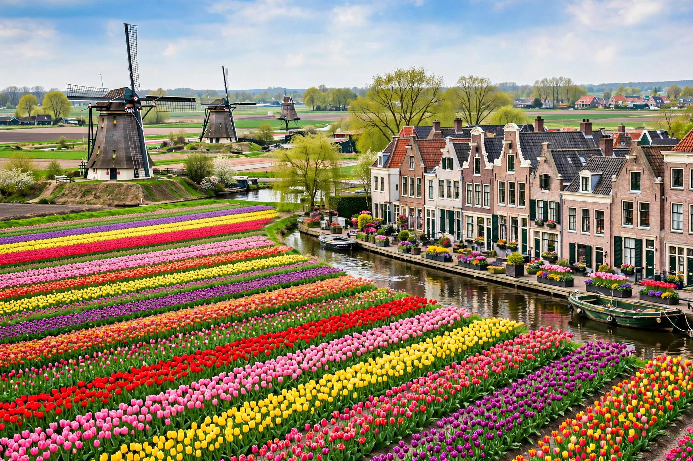

North Holland (Dutch: Noord-Holland) is a province of the Netherlands in the northwestern part of the country. Its capital is Haarlem, and its largest city is Amsterdam, the national capital. Population is about 2.9 million.

| North Holland | |
|---|---|
| Capital | Haarlem |
| Largest city | Amsterdam |
| Area | 4,092 km² |
| Population | c. 2.95 million (2023) |
The province is a peninsula between the North Sea and the IJsselmeer, including the island of Texel. Much land is polder below sea level, protected by dunes and dikes — relevant to the North Sea flood of 1953. Municipalities include Alkmaar, Hilversum, Zaandam and Den Helder.
North Holland was formed in 1840 when Holland was split into North and South. The region was the economic core of the Dutch Republic in the 17th-century Golden Age, with Amsterdam as a global trading centre.
Finance, media (Hilversum), tourism, Schiphol Airport and the Port of Amsterdam dominate. See Amsterdam, Netherlands.